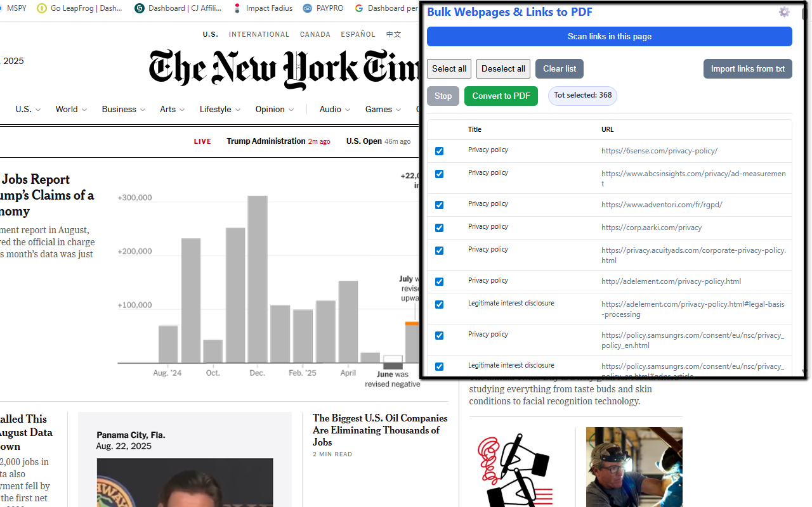

Batch Webpages & Links → PDF
Save time and stay organized with Batch Webpages & Links → PDF — the easiest way to turn a page’s links into high-quality PDFs in bulk. Open any page, let the extension auto-scan the links you can see (and many you can’t, like those inside iframes and shadow DOM), select what you need, and click Convert to PDF. Each selected URL is captured as its own PDF 📄 — ideal for research kits, documentation packets, client handoffs, or offline reading.
Built for modern websites, the converter “prepares” pages before printing to avoid missing images or half-loaded sections. It scrolls through long pages to trigger lazy content, upgrades data-src/srcset images, waits for images and fonts to finish loading, and prints with backgrounds enabled for faithful rendering. It also filters out common ad/tracking links (e.g., DoubleClick and similar networks) so your selection stays clean and focused. 🧹
Have a list ready? Bring your own collection with TXT import — one URL per line — and merge it into the table. Use quick controls like Select / Deselect All and a live Tot selected counter to manage big batches with confidence. In demo mode, exported PDFs include a subtle red DEMO WATERMARK; enter a valid license code in the popup to remove it permanently. 🔐
✨ Key Benefits
- One PDF per selected link — batch exports made simple.
- Deep link scan across iframes and shadow DOM.
- Smart page preparation for complete, reliable captures.
- TXT import (one URL per line) for ready-made lists.
- Ad/tracker filtering to keep results clean.
- Custom PDF settings: margins, orientation, scale, backgrounds.
- Optional license to remove the demo watermark.
🧭 How It Works
- Install the extension and open a page with links.
- The popup auto-scans links and shows them in a table with titles and URLs.
- (Optional) Import more links from a
.txtfile. - Select what you need and click Convert to PDF.
- Find each PDF in your Downloads folder — one file per link. ✅
📷 Screenshots


🔒 Permissions & Notes
The extension works locally in your browser (no servers involved). It requests permissions to scan pages, download PDFs, and access Chrome’s print-to-PDF engine. Chrome may show a temporary “debugging” banner during printing — that’s expected behavior. It doesn’t run on internal Chrome pages (e.g., chrome://) or the Web Store.